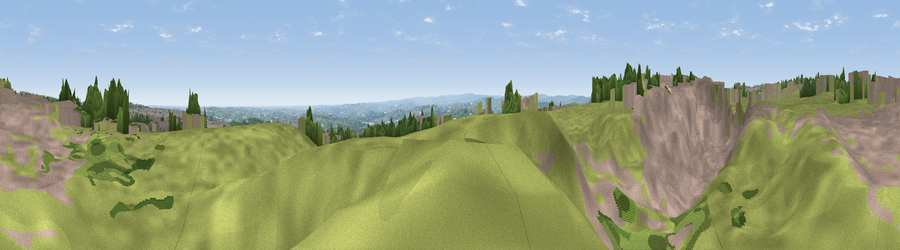

Viewpoint near Shelf
#14378 in England · top 18% of its area beats it · near Shelf · path 163 mWhere it is
The exact computed spot (SE 11325 28725). Click the marker for map links.
Public access: the nearest public right of way is about 163 m away — the final stretch may cross private land. Computed from Natural England's CRoW access layer and OpenStreetMap rights of way — not the legal definitive map. Always verify locally.
The view, rendered

A 360° render of this exact spot computed from the terrain model, tree cover and land cover — summer colours, afternoon light, calibrated against photographs of famous viewpoints. Real trees, hedges and buildings will differ in detail.
The panorama
Grey silhouette: terrain skyline in each direction (720 bearings, Earth curvature and refraction included). Dashed green: skyline with trees (+15 m) and buildings (+8 m) as obstacles. Blue strip: how far the ground is visible on each bearing.
Where the view opens
Wedge length = distance to the farthest visible ground on that bearing (vegetation-aware). Rings at 10, 25 and 50 km.
What fills the view
59% grassland · 28% built-up · 12% woodland · 1% cropland
Angular shares of the visible panorama (visual magnitude), not map area. Landscape diversity 0.42 (0–1 Shannon).
Key numbers
More beautiful places nearby
The staircase of upgrades: each row has a higher view potential than everything closer. Driving times are estimates from straight-line distance, calibrated against real road routing — check an actual route before setting out.
| Place | Direction | Drive | Score |
|---|---|---|---|
| Viewpoint near Shelf | SW · 1 km | ~2 min | 58.6 |
| Viewpoint near Queensbury | NNE · 2 km | ~6 min | 62.2 |
| Viewpoint near Stump Cross | SW · 3 km | ~6 min | 67.8 |
| Viewpoint near Stump Cross | WSW · 3 km | ~7 min | 71.5 |
| Rawdon Billing | NE · 15 km | ~27 min | 72.7 |
| Viewpoint near Otley | NNE · 18 km | ~31 min | 77.5 |
| Darwen Hill | W · 44 km | ~64 min | 80.7 |
| White Brow | WSW · 48 km | ~69 min | 82.9 |
53.75477, -1.82972 · source: screening · position refined by local search. Computed location — check access rights before visiting.